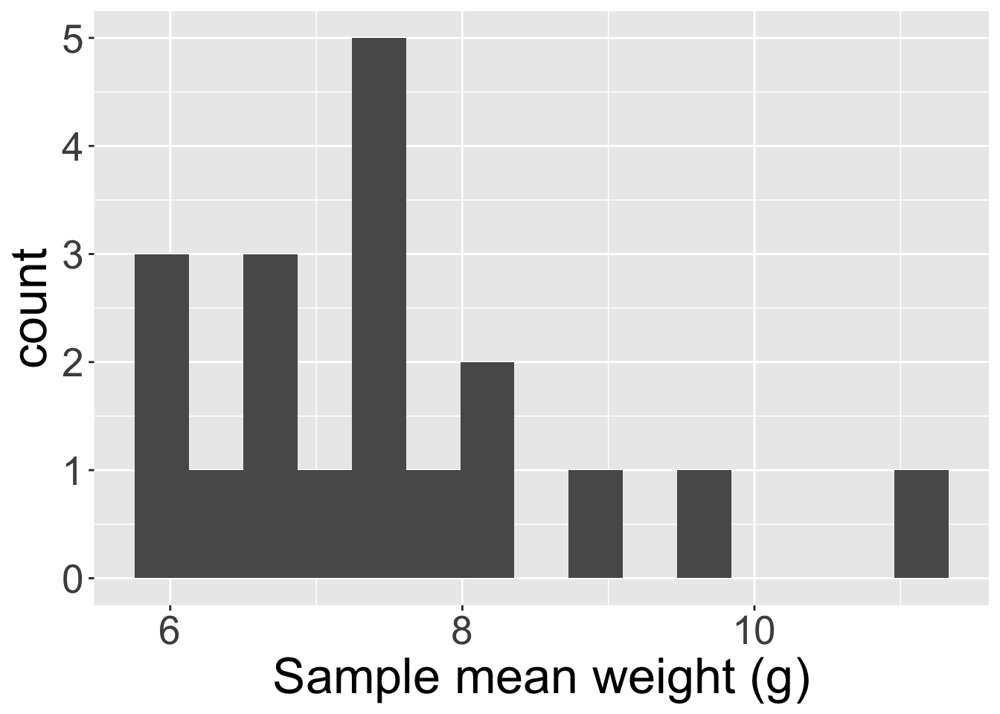
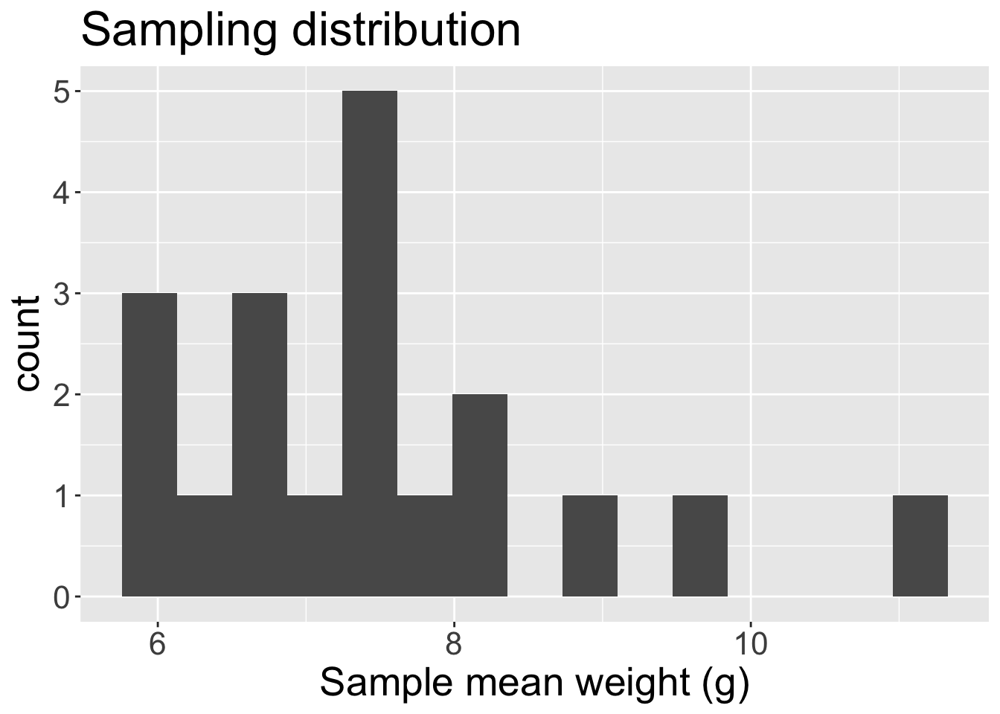

── Attaching core tidyverse packages ──────────────────────── tidyverse 2.0.0 ──
✔ dplyr 1.1.4 ✔ readr 2.1.5
✔ forcats 1.0.0 ✔ stringr 1.5.1
✔ ggplot2 3.5.2 ✔ tibble 3.2.1
✔ lubridate 1.9.4 ✔ tidyr 1.3.1
✔ purrr 1.0.4
── Conflicts ────────────────────────────────────────── tidyverse_conflicts() ──
✖ dplyr::filter() masks stats::filter()
✖ dplyr::lag() masks stats::lag()
ℹ Use the conflicted package (<http://conflicted.r-lib.org/>) to force all conflicts to become errors
Rows: 4526 Columns: 3
── Column specification ────────────────────────────────────────────────────────
Delimiter: ","
chr (3): Decision, Gender, Dept
ℹ Use `spec()` to retrieve the full column specification for this data.
ℹ Specify the column types or set `show_col_types = FALSE` to quiet this message.Sampling distribution and Introduction to Bootstrap
Activity
While you’re coming into the room, please take 1 card. Then:
On the unlined side, write down “yes” if you drink coffee regularly, and “no” otherwise
On the lined side, write down the average number of hours of sleep you get per night
Then bring these to Prof. Tang
Housekeeping
Midterm 1 graded. Well done!
Scores out of 51
Feedback posted on Gradescope. Everyone received a free 3.5 points.
Final score on Canvas: minimum(51, score + 3.5)
DataFest next weekend April 4-6.
Where we are going
We are shifting focus from EDA and beginning to enter the world of statistical inference and modeling!
Want to answer questions about a population, but must rely on a sample
Collect data from sample –> calculate statistics
What can we say about the statistics?
Data are random! So how sure are we about our conclusions?
Statistics starts here!
Inference
Statistical inference is the process of using sample data to make conclusions about the underlying population the sample came from
Estimation: using the sample to estimate a plausible values for the unknown parameter
Testing: evaluating whether our observed sample provides evidence for or against some claim about the population
Research questions involving estimation
Examples:
What proportion of Middlebury students drink coffee regularly?
What is the average number of hours of sleep Middlebury students get a night?
Questions here are about a population parameter
- If we have a census, we can answer the question immediately.
- If we only have a sample, we have to do our best to answer the question using our data \(x_{1}, x_{2},\ldots, x_{n}\)
Activity
What proportion of Middlebury STAT 201A students drink coffee regularly?
Target population:
Sampling method:
Population parameter:
Are we able to compute the value of the parameter, or do we need to calculate a statistic?
What proportion of Middlebury students drink coffee regularly?
Target population:
Sampling method:
Population parameter:
Are we able to compute the value of the parameter, or do we need to calculate a statistic?
Point estimate
Sample proportion \(\hat{p}\) is a very sensible estimate for true proportion \(p\)
\(\hat{p}\) is an example of a point estimate: a single number used to estimate a true but unknown population parameter
i.e. a point estimate is a statistic with a specific purpose
Other examples include sample mean \(\bar{x}\) for true mean \(\mu\), and \(s\) for \(\sigma\)
What might be a desirable characteristic of a “good” point estimate?
- Do we expect that the sample statistic will equal the population parameter? (e.g. how likely is it that \(\bar{x} = \mu\) or \(\hat{p} = p\) exactly?) Why or why not?
Variability of statistic
Two datasets collected under identical sampling procedures will almost always differ due to variability in the sample.
As a result, values of the point estimate/sample statistic that we calculate from the different samples will also exhibit variability
Thus, there exists the notion of a sampling distribution of the statistic: how the statistic behaves under repeated random samples obtained via the same sampling procedure
The variability associated with the sampling distribution of the statistic is called the standard error
- Note: “error” \(\neq\) bad
This is in contrast to the standard deviation, which describes variability in the individual data points and not the statistic
Different distributions
Population distribution: distribution of the variable of interest for everyone in the population
- Has associated variability \(\sigma\)
Sample distribution: distribution of the data from a single sample
- Has associated variability \(s\)
Sampling distribution: distribution of sample statistics calculated from the data obtained from multiple samples
- Has associated variability standard error \((SE)\)
Recall candy activity
At the beginning of the semester, I passed around a bag of candy and everyone took out 5 pieces at random, and measured the average weight.
What was the parameter of interest? What sample statistic did you calculate?
Rows: 19 Columns: 1
── Column specification ────────────────────────────────────────────────────────
Delimiter: ","
dbl (1): mean_wts
ℹ Use `spec()` to retrieve the full column specification for this data.
ℹ Specify the column types or set `show_col_types = FALSE` to quiet this message.
The histogram visualizes your sample mean weights.
Does this histogram visualize the population distribution, the sample distribution, or the sampling distribution of a statistic?
Candy activity (cont.)

Each one of the values in the histogram is a sample mean \(\bar{x}\) (i.e. a sample statistic)
Thus, the histogram visualizes the sampling distribution of the sample mean
- The mean of these sample means is 7.49 grams, with \(SE=\) 1.34
How to answer the research question?
Remember, our questions of interest are about a population. The following options list ways to answer the question. For each, what are the pros/cons?
Using the population
Using a single sample (i.e. the sample distribution)
Using several samples (i.e. the sampling distribution)
- Thus, for answering estimation questions, we should aim to access a sampling distribution (we did this with the candy activity!)
How to obtain a sampling distribution?
Sometimes, we assume that the population/data have a very specific behavior, and this allows us to exactly define the sampling distribution
- Will see this in a couple of weeks
If we don’t want to make assumptions, then we rely on sampling
- Can we obtain multiple samples cheaply and quickly?
Bootstrap
Bootstrapping is a flexible method that allows us to move forward in an analysis without knowing exactly how the data were generated.
Procedure
- Assume we have a single sample \(\boldsymbol{x} = (x_{1}, x_{2}, \ldots, x_{n})\) from the population. Note the sample size is \(n\)
- Choose a large number \(B\). For \(b\) in \(1,2, \ldots, B\):
- Resample: take a sample of size \(n\) with replacement from \(\boldsymbol{x}\). Call this set of \(b\)-th re-sampled data \(\boldsymbol{x}^*_{b}\)
- Calculate: calculate and record the statistic of interest from \(\boldsymbol{x}^{*}_{b}\)
At the end of this procedure, we will have a bootstrap distribution of resample or bootstrap statistics.
- This bootstrap distribution approximates the sampling distribution!
In the candy activity, I claim that we did not perform bootstrapping. Why not?
Demonstration
Activity cont.
Live code demonstration
Why resample with replacement?
We want to understand the sampling error of the sampling distribution!
What would the bootstrap samples \(\boldsymbol{x}^*_b\) look like if we sampled without replacement?
- Sampling without replacement -> zero variation in the resampled statistics
Resampling with replacement will give us “new” datasets that are similar to original sample distribution but not exactly the same!
- Ideally, the variation in the bootstrapped statistics is similar to the true standard error of the sample statistics
Remarks
Relies on having a representative original sample!
- Resampling from initial sample should be roughly equivalent to sampling directly from the population
Requires computational tools!
We need \(B\) to be large enough to accurately capture variability. \(B=5000\) or \(B=10000\) sufficient in this class
More complex problems will require larger \(B\)
Bootstrapping can fail!
Bootstrapping is not a solution to small sample sizes!!